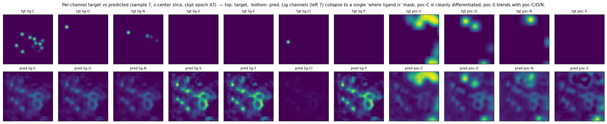
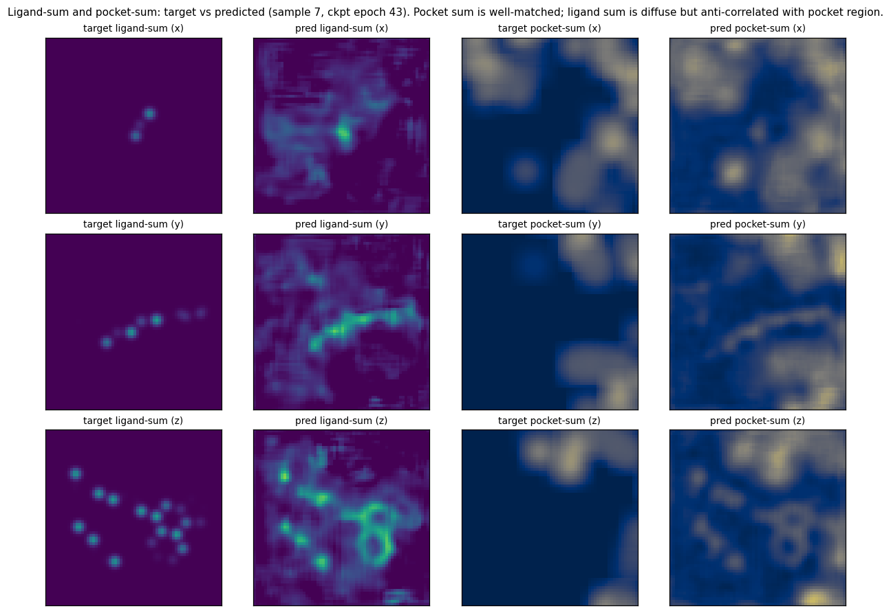

With uniform struct_pos_weight = 100 applied across all 11 structure-head channels, the model's per-channel corr(pred, own target) is sharply rank-ordered by the channel's positive-voxel fraction:
| channel | tgt pos% | pred peak | corr(pred, own tgt) | corr(pred, lig_sum) |
|---|---|---|---|---|
| poc-C | 64.5% | 1.11 | 0.95 | -0.07 |
| poc-O | 30.8% | 1.07 | 0.71 | -0.01 |
| poc-N | 26.4% | 1.06 | 0.68 | -0.02 |
| poc-S | 2.2% | 0.88 | 0.20 | -0.01 |
| lig-C | 0.87% | 0.60 | 0.30 | 0.35 |
| lig-O | 0.18% | 0.53 | 0.12 | 0.38 |
| lig-N | 0.16% | 0.49 | 0.12 | 0.39 |
| lig-S/F/Cl | ≤ 0.02% | 0.08–0.15 | 0.01–0.02 | ~0.39 |
| lig-P | 0.000% | 0.15 | 0.00 | 0.40 |
The lig-P row is the smoking gun: target peak is exactly 0.00 in every val sample (no P atoms in any of the 100 pockets sampled) yet the predicted lig-P channel has peak ≈ 0.15 and correlates with lig_sum at 0.40 — same correlation as every other lig channel. Sparse pocket-S behaves similarly. The figures below confirm the all-lig-channels-look-the-same pattern visually.


The current per-voxel weighted MSE w = 1 + (pos_weight - 1) · 𝟙(target > thresh) applies the same pos_weight = 100 to all 11 channels. Because the channels have hugely different positive fractions (lig-P has 0 atoms/sample, poc-C has ~7000), the gradient flux is dominated by the dense channels. Sparse channels (lig-S/F/Cl/P, poc-S) get essentially no per-channel discrimination signal — the model just dumps a generic "source-region present" pattern into them.
A per-channel normalization that scales each channel's positive contribution by 1/pos_frac_c (or equivalently, averages the per-channel loss over channels rather than over all voxels) would balance the gradient flux across channels, giving sparse channels comparable supervision to dense ones.
Note: this only matters if we care about the structure head's outputs. For the Phase-3 plan (transfer the encoder into VoxBind), the head is discarded; channel-level confusion at the head does not necessarily corrupt the encoder's spatial features (the encoder still receives "where atoms exist" gradient through the dense channels). However, balanced per-channel gradient might still sharpen encoder geometry, especially for the lig-region representation, which today is fuzzy (lig pred mass is 31× target).
compute_losses to compute a per-channel-normalized weighted MSE:
pos = (target_str > thresh).to(a_hat.dtype) w = 1.0 + (pos_weight - 1.0) * pos # per-channel sum then normalize by per-channel positive count per_chan_loss = ((a_hat - target_str) ** 2 * w).sum(dim=(0, 2, 3, 4)) n_pos_per_chan = pos.sum(dim=(0, 2, 3, 4)).clamp(min=1.0) L_str = (per_chan_loss / n_pos_per_chan).mean()Channels with zero positives in the batch fall back to a small
eps floor (or are masked out of the channel-average). Either expose a config field struct_loss = uniform|per_channel for clean A/B, or just default to per-channel.
checkpoint_e0040.pth.tar with the new loss for ~30-40 epochs (cheaper than fresh restart since encoder is already well-trained on density inpainting). Track:
corr(pred, own tgt) for all 11 channels — does lig-C climb from 0.30 → > 0.6? does lig-P drop from 0.40 toward 0?pred_mass / tgt_mass drop from 31× toward 1×?struct_pos_weight or lambda_str.260521_density_mae_posweight (current, uniform pos-weight) vs the per-channel-normalized variant. If the latter doesn't move Vina-Dock, conclude that head-level channel balance does not meaningfully improve encoder features and the cheaper uniform-weight pretraining is sufficient.
The encoder is the deliverable; the structure head is discarded after pretraining. Source-level lig-vs-poc separation is already emerging cleanly (poc corr 0.94, IoU 0.91) and density inpainting is healthy (val L_dens 0.016 at ckpt e0040, still slowly dropping). Per-channel normalization is a sharpening pass; the cheaper test is to ship the current encoder to Phase 3 and revisit if downstream docking benefits don't materialize.